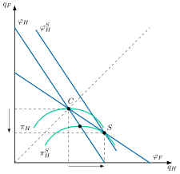
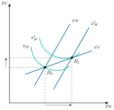
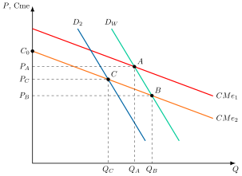
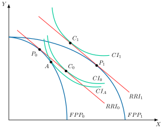

Apuntes para la oposición al Cuerpo de Diplomados Comerciales del Estado
17 Política comercial (II): la política comercial estratégica.
Tema pendiente de revisión. Este tema está publicado pero aún no lo he revisado a fondo: puede contener erratas o partes por pulir.
17.1 Introducción  1'
1'
Las teorías tradicionales y nuevas del comercio internacional, aunque siguen vigentes, no capturan por completo la complejidad actual. Si bien el libre comercio ha sido históricamente considerado la situación ideal (first-best), los países se alejan de él para aplicar políticas comerciales como herramientas de poder geoeconómico, operando en un entorno marcado por imperfecciones estructurales (second-best). La guerra comercial entre EE. UU. y China demuestra que los intereses estratégicos prevalecen sobre las doctrinas económicas. En el mundo de hoy, el comercio es tanto un instrumento de política exterior y poder como de prosperidad.
En este marco, la política comercial desplegada por los gobiernos tiene dos dimensiones principales: la defensiva, que protege a los productores nacionales de la competencia de las importaciones, y la ofensiva, que busca mejorar la posición competitiva de las empresas nacionales, sobre todo en los mercados exteriores. Este tema estudia la ofensiva y la vertiente defensiva de la política estratégica. Dentro de la ofensiva, la estratégica apoya directamente a industrias específicas, mientras que la promoción ofrece un apoyo más general a todas las exportaciones.
Por ello, el objetivo de esta exposición será el análisis de la política comercial ofensiva y de la vertiente defensiva de la estratégica, a través del siguiente esquema:
Marco: la justificación de las políticas comerciales.
Política comercial estratégica, con los modelos de Brander y Spencer y de Eaton y Grossman, y su vertiente defensiva.
Industria naciente y externalidades.
Críticas y nueva política industrial.
Política de promoción exterior.
17.2 Marco: la justificación de las políticas comerciales 1'30"
Los argumentos tradicionales a favor del libre comercio descansan en la competencia perfecta. Las economías reales no operan bajo ella, debido a múltiples distorsiones que impiden alcanzar la eficiencia paretiana. En consecuencia, los gobiernos pueden aplicar políticas comerciales por distintas razones:
Política comercial defensiva: efectos redistributivos (teorema de Stolper-Samuelson), destrucción de empresas nacionales y motivos no económicos como la geopolítica, la seguridad de abastecimiento (como la fragilidad de las cadenas globales de valor durante la pandemia de Covid-19) o las limitaciones de la OMC frente al dumping.
Política comercial ofensiva: fallos de mercado como la competencia imperfecta, las externalidades en innovación o la información imperfecta.
La industria naciente es un caso mixto, porque se protege con aranceles, que son un instrumento defensivo, pero su fin es crear una ventaja competitiva futura, propia de la política ofensiva. También lo es el arancel estratégico, que reduce las importaciones como la política defensiva, pero responde a la competencia imperfecta, como la ofensiva.
Este enfoque se respalda en la teoría del second best (Lipsey y Lancaster 1956). Cuando una distorsión no puede eliminarse, cumplir el resto de las condiciones de eficiencia no garantiza mejorar el bienestar, y el librecambio deja de ser necesariamente óptimo. Con una distorsión, ya no se cumple la igualdad entre la relación marginal de sustitución en el consumo, la relación marginal de transformación en la producción y la relación real de intercambio, que garantiza la eficiencia1.
A continuación, se analizan las políticas comerciales ofensivas que se derivan de estos fallos de mercado.
17.3 Política comercial estratégica 7'
La política comercial estratégica es el uso por el Gobierno de subsidios o impuestos a la exportación o a la importación para alterar, a favor de las empresas nacionales, el resultado de un mercado oligopolístico en el que existe interdependencia estratégica2.
Comportamientos estratégicos
En un mercado oligopolístico existen beneficios extraordinarios derivados de las barreras a la entrada3. En teoría, lo óptimo sería eliminar dichas barreras, pero en muchos casos esto resulta inviable (por ejemplo, debido a los elevados costes de I+D, como en la industria aeronáutica).
Por ello, la política comercial estratégica no busca corregir el fallo de mercado, sino capturar para el país una parte mayor de esas rentas, de forma coherente con el enfoque del second best. Cuando las empresas compiten en cantidades, lo hace mediante un traslado de rentas (rent shifting), es decir, la transferencia de beneficios extraordinarios de oligopolio desde la empresa extranjera hacia la nacional. Cuando compiten en precios, lo hace cobrando más a los consumidores del tercer país.
Modelo de Brander y Spencer
El modelo de James Brander y Barbara Spencer (Brander y Spencer 1985) trata de guiar la política comercial óptima. Es un análisis normativo, porque el gobierno maximiza el bienestar nacional (Brander 1995, 1398). El marco es un duopolio de Cournot en el que ambas empresas exportan a un tercer mercado. Se distingue así del modelo de dumping recíproco de Brander y Krugman (1983), en el que cada empresa vende también en el mercado de la otra y que se trata en el Tema 15.
Supuestos
El modelo se basa en los siguientes supuestos:
Duopolio de Cournot: una empresa nacional y una extranjera eligen simultáneamente las cantidades que producen de un bien homogéneo.
Tercer mercado: las dos empresas venden toda su producción en un tercer país y no hay consumo en los países de origen.
Costes con un componente fijo y otro variable, y una demanda en el tercer mercado con pendiente negativa. Para obtener una fórmula se suele suponer demanda lineal y costes iguales.
El gobierno nacional fija la subvención antes de que las empresas elijan cantidades, de modo que su política actúa como compromiso creíble.
El bienestar nacional es el beneficio de la empresa nacional neto de la subvención. El excedente del consumidor del tercer país no entra en el objetivo del gobierno nacional.
Análisis gráfico
Gráficamente, en un plano de cantidades producidas de la empresa nacional, \(q_{H}\), y de la empresa extranjera, \(q_{F}\), como el de la Figura 17.1, se representan las funciones de reacción de ambas empresas y las curvas de isobeneficio de la nacional. Así:
El nivel de producción de equilibrio será aquel en el que las funciones de reacción4 de las empresas se corten en \(C\).
Además, se introducen las curvas de isobeneficio5 netas de impuestos y subvenciones de la empresa nacional, \(\pi_{H}\), donde los beneficios aumentarán a medida que se acerquen al eje de producción de la empresa nacional.

Así, en el marco de este modelo, Brander y Spencer recordaron que la teoría general del oligopolio afirma que una empresa puede aumentar sus beneficios si actúa como líder. En la competencia de Stackelberg, la líder decide antes su producción y la seguidora se adapta a ella con su función de reacción, de modo que la líder aumenta su producción y consigue que la competidora produzca menos:
Gráficamente, la curva de isobeneficio se desplazaría hacia el eje, \(\pi^{S}_{H}\), hasta que sea tangente con la curva de reacción de la extranjera en el punto \(S\).
Pero para que la competidora cambie su estrategia de producción, es necesario que la líder lleve a cabo un movimiento creíble que indique que puede mantener ese alto nivel de producción en el tiempo6. Un movimiento es creíble cuando la empresa no tiene interés en revertirlo una vez hecho, de modo que los rivales lo toman como dado.
Si nada cambia (es decir, la función de reacción no se mueve), la mera amenaza de la empresa nacional de que va a aumentar su producción no es creíble, ya que, si la empresa extranjera redujera su producción, a la nacional le convendría responder sobre su función de reacción inicial, con menos producción de la anunciada, de modo que la amenaza no sería su mejor respuesta llegado el momento.
En el marco del comercio internacional ese compromiso creíble se puede conseguir a través de la política comercial. En efecto, un subsidio a la exportación desplaza hacia fuera la curva de reacción de la empresa nacional, de modo que aumenta su producción en el tercer mercado a costa de la de la empresa extranjera7.
Gráficamente, la curva de reacción de la empresa nacional con subvención, \(\varphi^{S}_{H}\), se desplaza hasta que intersecta con la función de reacción de la empresa extranjera en el punto \(S\).
Redistribución del bienestar
En cuanto a la redistribución del bienestar:
Empresa nacional: gana. Aumenta su producción y su beneficio bruto sube más de lo que cuesta la subvención, de modo que el beneficio neto crece. Es un traslado de rentas (rent shifting) desde la empresa extranjera8.
Empresa extranjera: pierde (menor producción → menor beneficio).
Consumidores del tercer país: ganan (la producción total aumenta, ya que la producción total con Stackelberg es mayor que con Cournot).
Por lo tanto, con esta política, la empresa nacional gana a costa de la empresa competidora, es decir, una política de empobrecimiento del vecino (beggar-thy-neighbour).
Implicaciones de política económica
Respecto a las implicaciones en política económica, además de los instrumentos arancelarios y fiscales, existen instrumentos financieros: el crédito a la exportación, justificado por las restricciones financieras de las empresas, el seguro a la exportación, justificado por la aversión al riesgo y prestado en España por la CESCE, la financiación del Fondo para la Internacionalización de la Empresa (FIEM) y la financiación multilateral. Estos instrumentos se consideran parte de la política de promoción exterior, que se estudia más adelante en el tema.
Modelo de Eaton y Grossman
Por otro lado, el modelo de Eaton y Grossman (1986) relativiza las conclusiones de Brander y Spencer e introduce la posibilidad de competir vía precios con bienes imperfectamente sustitutivos. Las empresas compiten a la Bertrand, es decir, fijan primero el precio y dejan que la cantidad vendida se ajuste a la demanda.
Análisis gráfico
Gráficamente, en un plano de precios de la empresa nacional, \(p_{H}\), y de la empresa extranjera, \(p_{F}\), como el de la Figura 17.2:
Se representan las curvas de isobeneficio, \(\pi_{H}\), que indican un mayor beneficio cuanto más arriba están, es decir, cuanto mayor es el precio de la rival, y se representan las funciones de reacción nacional, \(\varphi_{H}\), y extranjera, \(\varphi_{F}\), alcanzándose el equilibrio en el punto \(B_{0}\) que es donde se cortan9.
Dada la función de reacción de la empresa extranjera, la empresa nacional podría aumentar sus beneficios si pudiera situarse en el punto \(B_{1}\), ya que le permite alcanzar una curva de isobeneficio mayor, \(\pi^{\prime}_{H}\), porque, al subir su precio, la rival también sube el suyo (ahora cuanto más alta la isobeneficio, mayor beneficio).
Pero para llegar a dicho punto la empresa nacional tendría que aumentar el precio, y esto no es posible bajo un régimen de laissez faire, pues si la empresa nacional aumenta el precio y su rival no lo hace, perderá cuota de mercado pues el precio de la empresa extranjera será menor.
En este contexto, la empresa nacional necesitaría convencer a la empresa extranjera de que es un movimiento creíble. Así, dicho desplazamiento se lograría si el gobierno nacional grava las exportaciones, comprometiendo a la empresa nacional a cobrar un precio mayor en el tercer mercado, haga lo que haga la rival.
El impuesto debería ser tal que la función de reacción nacional, \(\varphi^{\prime}_{H}\), corte la curva de reacción extranjera, \(\varphi_{F}\), en el punto en el que la curva de isobeneficio, \(\pi^{\prime}_{H}\), es tangente, es decir, en \(B_{1}\), que es donde la empresa nacional obtiene los máximos beneficios posibles.
Por consiguiente, la política comercial óptima sería gravar las exportaciones y no subvencionar las exportaciones nacionales como en el modelo de Brander y Spencer.

Redistribución del bienestar
Entonces la redistribución de bienestar quedaría configurada de la siguiente manera:
La empresa nacional cobra un precio mayor y obtiene un beneficio bruto mayor, pero paga el impuesto a la exportación. Lo que mejora es el bienestar nacional, que suma el beneficio neto y la recaudación10.
La empresa extranjera gana, a mayor precio mayor beneficio.
Los consumidores del tercer país pierden, a mayor precio menor bienestar.
Por lo tanto, con esta política, el país gana a costa de los consumidores extranjeros. La intervención óptima, subsidio o impuesto, depende de si las empresas compiten en cantidades o en precios, y por eso la política exige conocer cómo compiten las empresas.
Condición general
Los dos modelos son, en realidad, casos de una misma regla, que Eaton y Grossman (1986) formulan en términos de conjeturas. La conjetura es lo que cada empresa cree que hará su rival cuando ella aumenta su producción. La respuesta efectiva es lo que el rival hace de verdad, según su función de reacción. La política óptima corrige la diferencia entre ambas (Brander 1995, sec. 3.3), y caben tres casos11:
Si la respuesta efectiva coincide con la conjetura, lo óptimo es el libre comercio.
Si el rival retrocede más de lo que la empresa nacional espera, esta produce demasiado poco y lo óptimo es una subvención. Es el caso de Cournot. La empresa supone que el rival no cambiará su producción, pero en realidad la reduce.
Si el rival retrocede menos de lo que la empresa nacional espera, esta produce demasiado y lo óptimo es un impuesto. Es el caso de Bertrand. La empresa supone que, si baja su precio, el rival mantendrá el suyo y perderá ventas, pero en realidad el rival también lo baja.
La intervención funciona porque el gobierno, que actúa antes que las empresas, hace creíble un compromiso que la empresa no puede asumir por sí sola.
Política comercial estratégica defensiva
La política comercial estratégica también tiene una vertiente defensiva, que reduce las importaciones. No es la defensiva clásica del Tema 16, que responde a motivos redistributivos o no económicos, sino un arancel que traslada rentas de oligopolio desde la empresa extranjera. Los modelos de tercer mercado no sirven para analizarla, porque en ellos ningún país importa el bien. Hace falta un marco en el que las empresas compitan también en el mercado nacional.
Mercados recíprocos
El marco es el de mercados recíprocos de Brander (1981), con los siguientes supuestos:
Dos países con una empresa cada uno, que producen un bien homogéneo y venden en su propio mercado y en el del otro.
Mercados segmentados: cada empresa decide por separado cuánto vende en cada uno.
Competencia en cantidades a la Cournot con costes marginales constantes, de modo que cada mercado puede analizarse por separado.
Es el mismo marco del dumping recíproco de Brander y Krugman (1983), citado al presentar el modelo de Brander y Spencer. Brander y Spencer (1984) lo usan para estudiar el arancel como instrumento de traslado de rentas. Un arancel específico eleva el coste marginal de la empresa extranjera en el mercado nacional, y el gobierno nacional pondera tres efectos:
Consumidores: el precio sube y su excedente cae.
Empresa nacional: produce más y gana más, porque la extranjera, con un coste mayor, produce menos.
Estado: recauda el arancel.
Con demanda lineal el arancel óptimo es positivo y vale una tercera parte de la diferencia entre el precio de saturación de la demanda y el coste marginal. Una parte de ese arancel es renta que se extrae a la empresa extranjera y la otra, beneficio que se traslada a la empresa nacional12.
El resultado no se sostiene si el otro país responde. Sus incentivos son idénticos, de modo que el equilibrio con aranceles en ambos países es normalmente peor para los dos que el libre comercio (Brander 1995). Es un dilema del prisionero, y una de las razones de fondo de la cooperación multilateral.
Eaton y Kierzkowski
Eaton y Kierzkowski (1984) muestran que un arancel puede mejorar el bienestar incluso cuando el país no tiene empresa nacional que proteger. En ese caso solo actúa la extracción de renta. El modelo se basa en los siguientes supuestos:
Dos bienes, uno homogéneo y otro diferenciado, producido en oligopolio con rendimientos crecientes.
Las empresas eligen primero la variedad y después el precio, y no pueden segmentar los mercados.
El país nacional no produce el bien diferenciado y en el extranjero hay un monopolista.
Los consumidores nacionales tienen un precio crítico, por encima del cual prefieren el bien homogéneo.
De estos supuestos se sigue que:
Sin arancel, el monopolista no puede cobrar a los consumidores nacionales más que el precio crítico y, como no puede segmentar, lo cobra también en su país. El consumidor nacional queda igual que en autarquía.
Con arancel, el monopolista debe reducir su precio neto de exportación sin que cambie el precio que paga el consumidor nacional, y la recaudación mejora el bienestar nacional.
17.4 Industria naciente y externalidades 3'30"
A diferencia del argumento estratégico, que opera en oligopolios y trata de trasladar rentas, el de la industria naciente no necesita competencia imperfecta: se apoya en economías de escala externas o dinámicas y busca crear una ventaja futura.
La protección de la industria naciente
El argumento de la industria naciente se apoya en un fallo de mercado. Uno de los más citados son las economías de escala externas, que reducen el coste medio de cada empresa cuando crece la industria entera y no la propia empresa13. Pueden proceder de la especialización de proveedores y trabajadores o de la difusión del conocimiento. Una industria con economías de escala externas estará formada generalmente por muchas pequeñas empresas en competencia perfecta.
Economías de escala externas
Gráficamente, en un plano de precios y cantidades como el de la Figura 17.3, se representan las curvas de costes medios de cada país y la demanda mundial del bien. Así:
Se suponen dos países, 1 y 2, que producen un bien. Dado que las economías de escala en la producción de un bien son enteramente externas a las empresas, la industria del bien en cada país está constituida por empresas pequeñas y en competencia perfecta, lo que presiona el precio hasta sus \(CMe\). Además, se supone que el país 2 tiene unos costes menores que el 1 –porque, por ejemplo, los salarios del país 2 son mucho menores que los del país 1–.
Se representan las curvas de costes medios de cada país y la demanda mundial del bien, \(D_{W}\), por lo que en principio se esperaría que el país 2 abasteciera el mercado mundial en el punto \(B\) con unos precios y cantidades asociados.
Sin embargo, por razones históricas el país 1 desarrolla primero su industria, de manera que el equilibrio se sitúa en \(A\), para un precio y producción asociados. Además, no hay producción inicial del país 2, ya que ninguna empresa individual de dicho país puede producir el bien dados los costes de producción iniciales \(C_{0}\), por encima del precio establecido por la industria del país 1. Así, ninguna empresa del país 2 está dispuesta a dar el primer paso para esos precios y costes, dándose una especialización perversa en la que el país que llegó primero captura todo el mercado aunque sea menos eficiente.
En definitiva, dado que las economías de escala son externas a la empresa, ninguna empresa las tiene en cuenta a la hora de tomar sus decisiones de producción, y la ventaja en costes del país 2 nunca se materializará14. No obstante, si se introduce la demanda del país 2, \(D_{2}\), podría producir dicho bien a un precio inferior al marcado por el país 1 en el punto \(C\), por lo que habría incentivos a proteger su industria frente a la competencia extranjera.

De esta forma, el comercio puede no ser beneficioso para todos los países, debido a la especialización perversa que se deriva de accidentes históricos. Esto justifica la protección de la industria naciente, argumento propuesto inicialmente por Hamilton (1791) y después por List (1841).
Análisis gráfico de la industria naciente
Gráficamente, en un plano de producción y consumo de los bienes \(X\) e \(Y\) como el de la Figura 17.4, se representa la FPP, \(FPP_{0}\), y la relación real de intercambio, \(RRI_{0}\). En este contexto15:
El país analizado estará produciendo en \(P_{0}\) y consumiendo en \(C_{0}\). Como se puede observar, producirá más del bien \(Y\) aunque se supone que tiene una ventaja comparativa potencial en el bien \(X\).
Por ello, se introduce un arancel prohibitivo que impone una situación de autarquía en el punto \(A\), situándose en una curva de indiferencia inferior, \(CI_{A}\) y por lo tanto reduciendo el bienestar.
No obstante, esta medida temporal permitirá aprovechar las economías de escala y aumentar la capacidad productiva por lo que la FPP se desplaza, \(FPP_{1}\).
Cuando el país se abra al comercio internacional sería exportador de \(X\), produciendo en \(P_{1}\), en una nueva relación real de intercambio, \(RRI_{1}\), consumiendo en \(C_{1}\) y accediendo a la curva de indiferencia \(CI_{1}\), más alejada del origen y por lo tanto aumentando el bienestar respecto a las situaciones anteriores.
Por consiguiente, el sacrificio de bienestar de la fase de protección ha llevado a un aumento del bienestar final que lo ha compensado.

Tests de la industria naciente
Tradicionalmente se ha exigido que el argumento de la industria naciente supere dos pruebas, que Kemp (1960) bautizó como test de Mill-Bastable. La protección debe ser además temporal:
Test de Mill: debe probarse que la industria podrá algún día competir a los precios internacionales sin protección, por ejemplo porque las economías de aprendizaje reducirán sus costes mientras esté protegida.
Test de Bastable: debe probarse que la industria protegida generará en el futuro unas ganancias que compensen el coste del proteccionismo. Es decir, la suma descontada de los beneficios futuros debe superar la de las pérdidas de la fase de protección (Södersten y Reed 1994, 258).
Las dos pruebas son necesarias, pero no suficientes. Si los beneficios futuros compensasen las pérdidas iniciales, el mercado de capitales financiaría a la industria sin protección. Por eso el argumento exige además un fallo de mercado, como un mercado de capitales imperfecto o la imposibilidad de apropiarse del aprendizaje (Krugman et al. 2018, 313-14).
En la práctica, es prioritario elegir un sector con un elevado potencial de crecimiento de la demanda mundial o de la demanda de los socios comerciales del país.
Beneficios adicionales
Además, el sector puede tener beneficios adicionales si tiene:
Muchos eslabonamientos (hacia adelante y hacia atrás): baterías eléctricas.
Efectos desbordamiento (si se difunden conocimientos y tecnología de forma horizontal al resto de la economía): inteligencia artificial.
Es estratégico más allá de lo puramente económico (como es el caso de la infraestructura 5G16).
Históricamente, la teoría de la industria naciente fue adoptada a mediados del siglo XX por países en vías de desarrollo a través de la estrategia conocida como industrialización por sustitución de importaciones (aunque el resultado no fue positivo, las empresas, al verse protegidas, tenían menos incentivos para reducir costes, además la industria protegida en muchos países de Iberoamérica pertenecía a las clases más altas, las cuales obtuvieron mayores beneficios, incrementándose la desigualdad). Además, aislar a la industria la priva de la difusión tecnológica que canaliza el comercio internacional, por lo que la protección no asegura por sí sola una ventaja competitiva. Frente a la sustitución de importaciones, los países del sudeste asiático optaron por una industrialización orientada a las exportaciones.
Se citan con frecuencia como casos de éxito Japón y Corea del Sur, que protegieron sus industrias automotrices con aranceles y subsidios. Su efecto causal es discutido, y Krugman et al. (2018, 313) advierten del riesgo de la “industria pseudonaciente”, que se vuelve competitiva por razones ajenas a la protección.
Externalidades positivas
La política industrial y comercial dirigida a sectores de alta tecnología busca atraer empresas para generar beneficios sostenibles. Estas empresas generan externalidades positivas, como el spillover de conocimiento (ejemplo: las joint-ventures chinas), que benefician al conjunto de la industria. Además, alrededor de estos polos tecnológicos suelen surgir clusters de proveedores y empresas complementarias, impulsando el desarrollo industrial.
Estos efectos dinámicos, según los modelos de crecimiento endógeno de Romer y Grossman-Helpman17, pueden potenciar el crecimiento a largo plazo, al considerar el progreso tecnológico como resultado de la inversión en I+D.
El comercio internacional influye en el coste relativo de la I+D. La política comercial puede encarecerla o abaratarla, y con ello frenar o estimular el crecimiento (Grossman y Helpman 1991). Así, esta política busca ajustar dicho coste para favorecer el crecimiento endógeno.
17.5 Críticas y nueva política industrial 3'30"
Sin embargo, las políticas ofensivas no están exentas de críticas, que se pueden agrupar en cuatro:
Información y selección de sectores: exige conocer costes, demandas y reacciones de las empresas (Krugman et al. 2018, 331-32), y el contraste entre Brander y Spencer y Eaton y Grossman muestra que hasta el signo de la intervención depende de cómo compitan (Feenstra 2004, 291). Además, supone seleccionar los sectores a apoyar, lo cual no siempre es fácil. Se debería apoyar a los sectores con demanda creciente, con mayores eslabonamientos y con mayores externalidades positivas. Los semiconductores japoneses lo ilustran: se eligieron por sus posibles externalidades y rentas, y no llegaron a producirlas (Krugman et al. 2018, 333-34).
Equilibrio parcial y deseconomías pecuniarias: se analiza una industria aislada, sin tener en cuenta las distorsiones que generan los cambios fiscales. Si todos los sectores utilizan un mismo factor escaso, como el trabajo cualificado, el subsidio a un sector aumenta la demanda de ese factor y su precio, y perjudica a los demás (Dixit y Grossman 1986).18 Por eso, aunque se entienda bien una industria, hay que entender también las que compiten con ella por los recursos (Krugman et al. 2018, 332-33).
Economía política: está sujeta a la presión de los grupos de interés, de forma que las empresas tienen incentivos a desviar recursos de actividades productivas hacia la búsqueda de rentas (rent-seeking).19 Además, crea diferencias artificiales de productividad que son difícilmente sostenibles a largo plazo.
Reacción de otros países: es una política de empobrecimiento del vecino, que perjudica a la empresa extranjera o a los consumidores del tercer país según el modelo, por lo que los socios pueden responder con medidas similares y dejar a todos peor que con libre comercio, el dilema del prisionero ya visto con el arancel estratégico (Krugman et al. 2018, 333). Así, en el conflicto Airbus-Boeing, la UE y EE. UU. se han acusado mutuamente ante la OMC de subvencionar a sus fabricantes desde 200420. Además, la empresa podría verse tentada al dumping, y los acuerdos de la OMC suelen restringir estas medidas.
Nueva política industrial
La política industrial es el conjunto de medidas con las que el Estado apoya sectores o actividades concretos para cambiar la estructura productiva del país21. Su debate ha cambiado de enfoque. Rodrik (2008) sostiene que el argumento teórico a favor es sólido, porque los fallos de mercado a los que apunta, en los mercados de crédito, trabajo, productos y conocimiento, están en el núcleo de la economía del desarrollo, y que el argumento en contra descansa en las dificultades prácticas de su aplicación. La cuestión deja de ser si debe haber política industrial y pasa a ser cómo diseñarla. Para ello propone tres atributos: arraigo (embeddedness), es decir, que la política esté integrada en la sociedad y en el sector privado, incentivos y sanciones (carrots and sticks), con salvaguardas frente a la captura burocrática, y rendición de cuentas (accountability). La investigación reciente se resume en Juhász et al. (2024).
En la práctica, la política industrial ha vuelto a las economías avanzadas, con la Ley CHIPS y de Ciencia de Estados Unidos (2022)22 y el Reglamento europeo de chips (Reglamento (UE) 2023/1781). Eichengreen (2023) señala tres justificaciones económicas de este regreso: la dinámica del desarrollo industrial, con el big push y la protección temporal de la industria naciente, los problemas de las regiones deprimidas y la seguridad nacional. Pero advierte de que persiste la objeción de la economía política, porque la búsqueda de rentas es generalizada y no se sabe qué sectores merecen apoyo. Concluye que el éxito de una política industrial depende sobre todo de la política.
La experiencia de Corea del Sur con POSCO, la siderúrgica pública creada en 1968, muestra que la política industrial puede funcionar si hay funcionarios competentes, orientación exportadora y ausencia de grupos de presión poderosos. Pero por cada caso de éxito hay fracasos, por lo que conviene evaluarla como una cartera de capital riesgo y no por casos aislados (Fernández-Villaverde 2011).
Precisamente por estas críticas y riesgos, muchos países, sobre todo los desarrollados, complementan la intervención selectiva con políticas de promoción exterior, de carácter horizontal.
17.6 Política de promoción exterior 3'
La política de promoción exterior proporciona instrumentos para apoyar la internacionalización de las empresas, sin vincularse directamente al volumen exportado. Busca apoyarlas en una primera fase para que establezcan lazos sólidos y duraderos y no dependan después del apoyo público. Es un apoyo horizontal a la industria exportadora en general, y se dedica tanto a promocionar exportaciones como a fomentar la inversión directa en el exterior, que puede generar un “efecto arrastre” sobre el tejido productivo. En España, la principal institución es el ICEX España Exportación e Inversiones, una entidad pública empresarial23.
Justificación
Entrar en un mercado extranjero puede verse como un proyecto de inversión en condiciones de incertidumbre. La empresa lo emprende si su valor actual neto esperado, VAN, es positivo, y entre varios mercados prefiere el de mayor VAN esperado por unidad de riesgo, medido por la desviación típica del VAN, es decir, el inverso del coeficiente de variación de Pearson. La promoción exterior busca reducir los costes de entrada y aumentar los flujos, y con ello el VAN.
Existen diferentes motivos que justifican la existencia de una política de promoción exterior, que se agrupan en tres:
Fallos de información: la información sobre los mercados extranjeros es imperfecta y costosa, de modo que las empresas recopilan menos de la óptima y afrontan más incertidumbre. Gran parte de ella, sobre todo la general sobre el mercado, es un bien público, pues es no excluible y no rival, y su oferta privada es insuficiente. El sector público tiene ventaja comparativa en proveerla, por su red de embajadas y oficinas comerciales, y evita duplicidades de costes.
Externalidades positivas: la internacionalización de unas empresas facilita la de las demás, porque permite el acceso a nuevas técnicas y tecnologías, da a conocer los productos nacionales en el extranjero y reduce la incertidumbre sobre la rentabilidad de las inversiones (efecto demostración).
Debilidad de la capacidad exportadora: la capacidad productiva está muy fragmentada, hay muchas pymes y su productividad es menor, pues no pueden aprovechar economías de escala y de gama. El modelo de Melitz (2003), que dio origen a la novísima teoría del comercio internacional, supone que exportar exige un coste fijo y muestra que solo las empresas más productivas pueden afrontarlo. A ello se suman la falta de preparación del personal, la mayor competencia doméstica y una demanda interna débil.
A estos tres motivos se añaden dos que explican por qué no basta con proveer información:
Redes: el comercio se apoya en la confianza, y la confianza circula por redes de negocio, de idioma y de emigrantes en el país de destino. A una empresa nueva le cuesta acceder a ellas, y ninguna empresa privada tiene incentivos a crearlas, porque beneficiarían también a las demás (free-rider). La evidencia con modelos de gravedad lo respalda. Los vínculos culturales y lingüísticos pesan más en el comercio de bienes diferenciados (Rauch 1999), la inmigración eleva el comercio con el país de origen (Gould 1994) y abrir embajadas y consulados se asocia a más exportaciones (Rose 2007).
Costes hundidos: exportar exige gastos de entrada que no se recuperan al salir, de modo que quien ya exporta tiende a seguir haciéndolo y quien no exporta, a no empezar (histéresis).
El modelo de Melitz, ya citado, permite ver qué consigue la promoción. Si solo exportan las empresas cuya productividad supera un umbral, una política que reduce el coste fijo de exportar, con información, contactos y trámites, baja ese umbral y amplía la base exportadora24. No pretende empujar a exportar a empresas improductivas, sino ayudar a las productivas que no exportan por unos costes de entrada demasiado altos.
Ahora bien, los fallos de mercado descritos son condición necesaria, pero no suficiente, para intervenir, porque el beneficio de cada actuación debe superar su coste. Por eso se tiende a cofinanciar los servicios o a cobrarlos, lo que además reduce el riesgo moral y la selección adversa.
Evidencia empírica sobre la efectividad de la política de promoción de exportaciones
Según los planteamientos más liberales, el gasto en promoción de exportaciones no tiene justificación económica. Sin embargo, la evidencia lo contradice: las agencias de promoción tienen un efecto positivo y significativo sobre las exportaciones, con rendimientos fuertemente decrecientes (Lederman et al. 2010). La efectividad depende además de la gobernanza: es mayor si la agencia se centra en empresas medianas y en nuevos exportadores, y si el sector privado tiene más puestos en su consejo (Olarreaga et al. 2015).25
Instrumentos
Basándose en esta justificación, los países han desarrollado cinco tipos de instrumentos:
Información: provisión pública de información sobre mercados, sectores, legislación y oportunidades de negocio, y acceso a redes de contactos a través de embajadas y consulados.
Formación y asesoramiento: seminarios, becas y cursos para evaluar el potencial exportador y adquirir las capacidades necesarias.
Promoción de marca e imagen: encuentros empresariales, misiones comerciales, ferias, planes de desarrollo de mercado y fomento de consorcios para evitar duplicidades.
Financiación, cofinanciada con la empresa: líneas de crédito a la internacionalización, como las del ICO, seguros a la exportación y participaciones de capital.
Regulatorios: simplificación de trámites, programas de movilidad internacional y acuerdos comerciales.
Las instituciones que los aplican son de distinta naturaleza: agencias con cierta independencia, como el ICEX en España, o departamentos ministeriales, como en el Reino Unido. Además, la promoción debe acompañarse de un entorno favorable a exportar, con estabilidad macroeconómica y financiera, competitividad e incorporación de las empresas a las cadenas globales de valor.
17.7 Conclusiones  30"
30"
Como conclusión, la política comercial ofensiva ha pasado de ser una excepción teórica a una práctica común, y el debate ya no es si intervenir, sino cómo hacerlo bien. Es una cuestión de diseño institucional más que de teoría económica: quién elige, con qué información y bajo qué disciplina. Ahí es donde una política industrial se gana o se pierde.
De esta forma hay que prestar especial atención a:
la autonomía estratégica abierta, es decir, la capacidad de actuar con independencia en áreas esenciales sin renunciar a la cooperación global, que persigue la Unión Europea con la Ley Europea de Chips, la Ley de Industria Net-Zero y el Reglamento sobre Materias Primas Fundamentales, enmarcados en el Plan Industrial del Pacto Verde26. ¿Cabe actuar con independencia sin caer en el proteccionismo?
la guerra de aranceles sobre los vehículos eléctricos chinos: en 2024, EE. UU. subió del 25 % al 100 % su arancel y la UE les impuso derechos compensatorios definitivos de hasta el 35,3 % durante cinco años27. ¿Es defensa comercial clásica, arancel estratégico o política industrial?
la parálisis de la OMC, cuyo Órgano de Apelación no funciona desde diciembre de 2019. ¿Quién arbitra una guerra de subvenciones cuando nadie puede apelar?
el balance de éxitos y fracasos: Airbus se suele citar como el gran éxito de la política industrial europea, y el Concorde, que costó a los Gobiernos británico y francés muchas veces lo previsto y del que solo se fabricaron 20 aparatos, como su gran fracaso comercial28. ¿Cómo distinguir un caso del otro antes de gastar el dinero?
Apéndice
17.A.1. Evidencia empírica sobre la política comercial estratégica
A continuación se presentan casos concretos de política comercial estratégica e industrial.
Airbus y Boeing: es el ejemplo más emblemático. Airbus Industrie se constituyó en diciembre de 1970 con el apoyo de gobiernos europeos para competir con el dominio estadounidense de Boeing, con préstamos reembolsables para I+D y apoyo político en compras. Un acuerdo bilateral entre la UE y EE. UU. de 1992 limitó las ayudas y, desde 2004, el conflicto se ha litigado en la OMC (casos DS316 y DS353). En julio de 2026 la UE prorrogó la suspensión de los aranceles cruzados acordada en 202129. El éxito comercial de Airbus muestra que la intervención puede romper monopolios en mercados oligopolísticos con altas barreras de entrada, y el debate persiste sobre si justificó el coste para los contribuyentes.
Asia oriental: Japón, con el MITI, y los “tigres asiáticos” Corea del Sur y Taiwán combinaron protección de industrias nacientes y fuerte orientación exportadora, sobre todo entre los años sesenta y ochenta, con subsidios, crédito preferencial e inversión en I+D hacia sectores como el acero, la automoción y la electrónica. Se suele atribuir su éxito a una condicionalidad estricta (las empresas debían exportar para mantener el apoyo) y a la coordinación público-privada. Su efectividad es debatida: Krugman et al. (2018, 313) recuerdan que Japón mantuvo amplios controles a la importación hasta los años setenta y advierten del riesgo de la industria pseudonaciente.
Acero: la sobrecapacidad ha llevado a Estados Unidos, desde 2018, a aplicar aranceles de la Sección 232 al acero, elevados después. La UE aplicó una salvaguardia hasta el 30 de junio de 202630, y desde el 1 de julio la sustituye un régimen de contingentes con arancel del 50 % fuera de cuota31. Estas medidas ofrecen un respiro temporal, pero raramente resuelven los problemas de competitividad y suelen provocar represalias.
Semiconductores: Estados Unidos (CHIPS and Science Act, 2022) y la UE (Ley Europea de Chips, adoptada en 2023) subvencionan la fabricación nacional de chips para reducir la dependencia de Asia. EE. UU. limitó además la exportación de tecnología a China con las normas del 7 de octubre de 2022. En junio de 2026 la Comisión propuso una “Ley de Chips 2.0” que sustituiría a la de 202332.
Vehículo eléctrico chino: China ha apoyado su industria desde la década de 2010 con subvenciones a la compra (hasta 2022), exenciones del impuesto de compra (total en 2024-2025 y del 50 % en 2026-2027), créditos duales y apoyo a la I+D en baterías. En 2024 vendió más de 11 de los más de 17 millones de coches eléctricos vendidos en el mundo (Agencia Internacional de la Energía). Occidente ha respondido con aranceles y derechos compensatorios, y en febrero de 2026 la Comisión aceptó el primer compromiso de precios mínimos, el de Volkswagen Anhui.
Inteligencia artificial: China publicó en 2017 su Plan de Desarrollo de la Inteligencia Artificial de Nueva Generación, con la ambición de ser referente mundial en 2030. En Estados Unidos, la Orden Ejecutiva 14110 de Biden (octubre de 2023) fue revocada en enero de 2025, y el America’s AI Action Plan de julio de 2025 se apoya en el sector privado, con iniciativas como Stargate (hasta 500.000 millones de dólares de compromisos privados). La UE aprobó el Reglamento de IA (UE) 2024/1689, en vigor desde el 1 de agosto de 2024, y lanzó InvestAI en 2025 para movilizar 200.000 millones de euros.
17.A.2. Cárteles internacionales
Un cártel internacional es un grupo de productores de un bien, de varios países, que acuerdan restringir la competencia entre ellos para controlar el precio internacional. Los acuerdos pueden ser gubernamentales, como la OPEP (fundada en Bagdad en 1960), o entre empresas privadas, como el pacto de 1902 entre American Tobacco e Imperial Tobacco, que se repartieron los mercados y crearon British-American Tobacco. El principal problema es la sostenibilidad del acuerdo y su ruptura33.
17.A.3. Estrategia de Internacionalización de la Economía Española 2017-2027
Aprobada por el Consejo de Ministros el 8 de septiembre de 2017, la Estrategia fija las líneas de acción para la internacionalización de la economía española con horizonte a 2027. Se desarrolla mediante planes de acción bienales, el primero de 2017-2018 y el tercero de 2021-2022.
Objetivos
Asegurar que la contribución positiva del sector exterior al crecimiento económico se consolide como fenómeno estructural y revierta en creación de empleo.
Apoyar a los exportadores y atraer inversión hacia España, en colaboración con otras instituciones y con el sector privado.
Dichas medidas mantienen un enfoque prioritario hacia la PYME, especialmente en sectores innovadores y sostenibles.
Seis ejes de actuación:
Apoyo a la internacionalización cada vez más adaptado a las necesidades y al perfil de cada empresa.
Incorporación de la innovación, la tecnología, la marca y la digitalización.
Desarrollo del capital humano para la internacionalización.
Mejor aprovechamiento de las oportunidades derivadas de la política comercial común y de las instituciones financieras y organismos internacionales.
Captación y consolidación de inversión extranjera de alto valor añadido.
Refuerzo de la coordinación y complementariedad de las acciones de todos los actores relevantes.
17.A.4. Instrumentos de financiación y apoyo en España
Estos instrumentos incluyen:
Líneas ICO: son líneas de financiación gestionadas por el Instituto de Crédito Oficial, orientadas a apoyar la internacionalización, la inversión y la liquidez de las empresas españolas. Incluyen ICO Internacional, ICO Exportadores e ICO Canal Internacional.
ICEX España Exportación e Inversiones: programas destacados:
ICEX Next: asesoramiento y cofinanciación para pymes y empresas emergentes que inician o consolidan su internacionalización.
ICEX Vives: prácticas internacionales para jóvenes en empresas españolas en el exterior.
Compañía Española de Seguros de Crédito a la Exportación (CESCE): aseguradora de riesgos comerciales y políticos en operaciones internacionales. Protege frente a impagos y riesgos regulatorios. Su accionista mayoritario es el Estado (50,25 % en 2019), junto a bancos como Santander y BBVA.
Red de Oficinas Económicas y Comerciales: más de un centenar de oficinas integradas en embajadas y consulados. Ofrecen inteligencia de mercado, apoyo institucional, promoción comercial y asistencia personalizada a las empresas españolas en el exterior.
Compañía Española de Financiación del Desarrollo (COFIDES): sociedad público-privada que financia proyectos de inversión en el extranjero y apoya iniciativas que contribuyen al desarrollo sostenible y a la internacionalización de las empresas españolas. El sector público (ICEX, ICO y ENISA) posee en torno al 53 % y el privado (Santander, BBVA, Sabadell y CAF), en torno al 47 %.
FIEM (Fondo para la Internacionalización de la Empresa): regulado por el Real Decreto 1797/2010 y gestionado por la Secretaría de Estado de Comercio. Financia exportaciones e inversiones en mercados estratégicos y se otorga al cliente extranjero o a la filial internacional de la empresa española.
17.A.5. Derivación del modelo de Brander y Spencer en el caso lineal
Sea una demanda lineal en el tercer mercado, con precio \(p\), precio de saturación \(a\), pendiente \(b\), y producciones \(q_{H}\) de la empresa nacional y \(q_{F}\) de la extranjera, de modo que la demanda inversa es:
\[p=a-b\left(q_{H}+q_{F}\right).\]
Ambas empresas tienen el mismo coste marginal constante, \(c\), y la empresa nacional recibe una subvención \(s\) por unidad exportada. El coste fijo común se omite porque no afecta a la elección de \(s\). El beneficio bruto de cada empresa, antes de descontar el coste de la subvención, es:
\[\pi_{H}=\left(p-c+s\right)q_{H},\qquad\pi_{F}=\left(p-c\right)q_{F}.\]
Maximizando cada beneficio respecto a su producción, las funciones de reacción son:
\[q_{H}=\frac{a-c+s-bq_{F}}{2b},\qquad q_{F}=\frac{a-c-bq_{H}}{2b}.\]
Resolviendo el sistema, el equilibrio de Cournot con subvención es:
\[q_{H}=\frac{a-c+2s}{3b},\qquad q_{F}=\frac{a-c-s}{3b}.\]
La subvención aumenta la producción nacional y reduce la extranjera, que es el desplazamiento de la función de reacción descrito en el cuerpo del tema. El bienestar nacional, \(W\), es el beneficio de la empresa nacional neto de la subvención, porque esta es una transferencia dentro del país:
\[W=\pi_{H}-sq_{H}=\left(p-c\right)q_{H}=\frac{\left(a-c-s\right)\left(a-c+2s\right)}{9b}.\]
La condición de primer orden es:
\[\frac{dW}{ds}=\frac{\left(a-c\right)-4s}{9b}=0,\]
de donde la subvención óptima es:
\[s^{*}=\frac{a-c}{4}.\]
Con esa subvención, las producciones son \(q_{H}=\left(a-c\right)/\left(2b\right)\) y \(q_{F}=\left(a-c\right)/\left(4b\right)\), que coinciden con las del líder y el seguidor de Stackelberg. El bienestar pasa de \(\left(a-c\right)^{2}/\left(9b\right)\) en Cournot a \(\left(a-c\right)^{2}/\left(8b\right)\), y la ganancia neta es:
\[\frac{\left(a-c\right)^{2}}{8b}-\frac{\left(a-c\right)^{2}}{9b}=\frac{\left(a-c\right)^{2}}{72b}.\]
La subvención actúa como el compromiso creíble que permite a la empresa nacional comportarse como líder. El país gana porque el beneficio trasladado desde la empresa extranjera supera el coste de la subvención. El resultado cualitativo aparece en Brander (1995, 1409).
17.A.6. Intuición con un juego de entrada: Boeing y Airbus
Un ejemplo de Krugman et al. (2018, 330-31) ilustra la lógica de Brander y Spencer sin ecuaciones. Los nombres de las empresas son ilustrativos y las cifras, hipotéticas.
Dos empresas, Boeing y Airbus, deciden si producen un nuevo avión. Cada una gana 100 si produce sola, y ambas pierden 5 si producen las dos. Los pagos, en el orden (Boeing, Airbus), son:
| Pagos (Boeing, Airbus) | Airbus produce | Airbus no produce |
|---|---|---|
| Boeing produce | \(\left(-5,-5\right)\) | \(\left(100,0\right)\) |
| Boeing no produce | \(\left(0,100\right)\) | \(\left(0,0\right)\) |
Si Boeing se adelanta y se compromete a producir, a Airbus no le compensa entrar y el resultado es \(\left(100,0\right)\). Ahora el gobierno europeo promete a Airbus una subvención de 25 si entra. Los pagos pasan a ser:
| Pagos (Boeing, Airbus) | Airbus produce | Airbus no produce |
|---|---|---|
| Boeing produce | \(\left(-5,20\right)\) | \(\left(100,0\right)\) |
| Boeing no produce | \(\left(0,125\right)\) | \(\left(0,0\right)\) |
Entrar es ahora rentable para Airbus decida lo que decida Boeing. Boeing, que sabe que Airbus entrará, pierde 5 si produce, y por eso no entra. El resultado pasa a ser \(\left(0,125\right)\): Airbus gana 125 con una subvención de solo 25. La subvención eleva el beneficio más que su importe porque disuade al rival. Descontado su coste, el beneficio neto para Europa es \(125-25=100\).
El mismo ejemplo muestra el riesgo de la política. Si Boeing tuviera una ventaja de fondo, por ejemplo una tecnología mejor, que le permitiera producir con rentabilidad aunque Airbus entre, la subvención no la disuadiría y su coste no se recuperaría. Por tanto, la política exige una información exacta de la situación (Krugman et al. 2018, 332).
17.A.7. Condición general de la política óptima con conjeturas
Se sigue la versión con subvención específica de Brander (1995, sec. 3.3), que conserva los resultados de Eaton y Grossman (1986) aunque estos usan impuestos ad valorem. La empresa nacional produce \(q_{H}\) y la extranjera \(q_{F}\) de dos bienes diferenciados. El precio que obtiene la empresa nacional, \(p_{H}\), depende de ambas producciones y baja cuando aumenta la extranjera, \(\partial p_{H}/\partial q_{F}<0\). Su coste es \(C\left(q_{H}\right)\) y recibe una subvención \(s\) por unidad. Su conjetura, \(\lambda\), es la variación que espera en \(q_{F}\) cuando aumenta \(q_{H}\). Su condición de primer orden es:
\[p_{H}+q_{H}\cdot\frac{\partial p_{H}}{\partial q_{H}}+\lambda\cdot q_{H}\cdot\frac{\partial p_{H}}{\partial q_{F}}-C'\left(q_{H}\right)+s=0.\]
El bienestar nacional es el beneficio neto de la subvención, \(W=p_{H}\cdot q_{H}-C\left(q_{H}\right)\). La respuesta efectiva del rival, \(\gamma\), es el cociente entre la variación de \(q_{F}\) y la de \(q_{H}\) que provoca la subvención en el equilibrio, \(\gamma=\left(dq_{F}/ds\right)/\left(dq_{H}/ds\right)\). Derivando el bienestar respecto de la subvención y sustituyendo la condición de primer orden:
\[\frac{dW}{ds}=\left[\left(\gamma-\lambda\right)\cdot q_{H}\cdot\frac{\partial p_{H}}{\partial q_{F}}-s\right]\cdot\frac{dq_{H}}{ds}=0\quad\Longrightarrow\quad s^{*}=\left(\gamma-\lambda\right)\cdot q_{H}\cdot\frac{\partial p_{H}}{\partial q_{F}}.\]
Como \(q_{H}>0\) y \(\partial p_{H}/\partial q_{F}<0\), el signo de la subvención óptima es el contrario al de \(\gamma-\lambda\), y hay tres casos:
Si \(\gamma=\lambda\), la conjetura es correcta, \(s^{*}=0\) y lo óptimo es el libre comercio.
Si \(\gamma<\lambda\), lo óptimo es una subvención. En Cournot la conjetura es \(\lambda=0\) y el rival reduce su producción, \(\gamma<0\), de modo que se obtiene el resultado de Brander y Spencer.
Si \(\gamma>\lambda\), \(s^{*}<0\) y lo óptimo es un impuesto. En Bertrand la conjetura, expresada en cantidades, es negativa, porque la empresa espera que el rival mantenga su precio y pierda ventas. Como en realidad el rival también baja su precio, pierde menos ventas de las esperadas, y se obtiene el resultado de Eaton y Grossman.
17.A.8. Derivación del arancel estratégico en mercados recíprocos
Se sigue el marco de mercados recíprocos de Brander (1981) y el análisis del arancel de Brander y Spencer (1984). Basta estudiar el mercado nacional, porque los mercados están segmentados y los costes marginales son constantes. Sea una demanda lineal con precio \(p\), precio de saturación \(a\) y pendiente \(b\), donde \(q_{H}\) es la producción de la empresa nacional y \(q_{F}\) la de la extranjera, de modo que la demanda inversa es:
\[p=a-b\cdot\left(q_{H}+q_{F}\right).\]
Ambas empresas tienen el mismo coste marginal constante, \(c\), y la extranjera paga un arancel específico \(t\) por unidad importada, de modo que su coste efectivo es \(c+t\). Llamando \(A=a-c\), las condiciones de primer orden del equilibrio de Cournot dan:
\[q_{H}=\frac{A+t}{3\cdot b},\qquad q_{F}=\frac{A-2\cdot t}{3\cdot b}.\]
El arancel aumenta la producción nacional, reduce la importada y sube el precio, que pasa a ser \(p=\left(a+2\cdot c+t\right)/3\). El precio sube, por tanto, solo en una tercera parte del arancel. El resto lo absorbe la empresa extranjera en su margen. El bienestar nacional, \(W\), suma el excedente de los consumidores, el beneficio de la empresa nacional y la recaudación del arancel:
\[W=\underbrace{\frac{\left(2\cdot A-t\right)^{2}}{18\cdot b}}_{\text{excedente del consumidor}}+\underbrace{\frac{\left(A+t\right)^{2}}{9\cdot b}}_{\text{beneficio nacional}}+\underbrace{\frac{t\cdot\left(A-2\cdot t\right)}{3\cdot b}}_{\text{recaudaci{ó}n}}=\frac{6\cdot A^{2}+6\cdot A\cdot t-9\cdot t^{2}}{18\cdot b}.\]
Su condición de primer orden, \(6\cdot A-18\cdot t=0\), da el arancel óptimo:
\[t^{*}=\frac{A}{3}=\frac{a-c}{3}.\]
Con él, la producción importada sigue siendo positiva, \(q_{F}=A/\left(9\cdot b\right)\), y el bienestar nacional pasa de \(A^{2}/\left(3\cdot b\right)\) en libre comercio a \(7\cdot A^{2}/\left(18\cdot b\right)\). El arancel óptimo se puede descomponer en dos sumandos, a partir de la condición general de Brander (1995, sec. 4), con \(p-c=4\cdot A/9\) en el equilibrio:
\[t^{*}=\underbrace{b\cdot q_{F}}_{\text{extracci{ó}n de renta}}+\underbrace{\frac{p-c}{2}}_{\text{traslado de beneficios}}=\frac{A}{9}+\frac{2\cdot A}{9}=\frac{A}{3}.\]
El primer sumando es la renta que el arancel extrae a la empresa extranjera y transfiere al Tesoro. El segundo es el beneficio que se traslada a la empresa nacional al expandir su producción. Con un monopolista extranjero y sin empresa nacional solo quedaría el primero.
Si el otro país aplica el mismo arancel, cada empresa exporta \(q_{F}=A/\left(9\cdot b\right)\) y obtiene en el mercado extranjero un beneficio, neto del arancel, de \(A^{2}/\left(81\cdot b\right)\). El bienestar de cada país en la guerra de aranceles y en libre comercio es:
\[\begin{aligned}W_{\text{guerra}} & =\frac{7\cdot A^{2}}{18\cdot b}+\frac{A^{2}}{81\cdot b}=\frac{65\cdot A^{2}}{162\cdot b},\\ W_{\text{libre}} & =\frac{A^{2}}{3\cdot b}+\frac{A^{2}}{9\cdot b}=\frac{72\cdot A^{2}}{162\cdot b}. \end{aligned}\]
Como \(W_{\text{guerra}}<W_{\text{libre}}\), los dos países salen peor que con libre comercio, aunque cada uno gane al aplicar su arancel óptimo cuando el otro no responde.
Términos del glosario de este tema
45 términos · ver el glosario completo
Bibliografía
Los argumentos a favor del libre comercio, con el modelo neoclásico y las nuevas teorías, se estudian en los Temas 14 y 15. La política comercial defensiva, con aranceles y medidas no arancelarias, se estudia en el Tema 16.↩︎
Por interdependencia estratégica cabe entender la noción de que cada empresa es consciente de que sus beneficios no solo dependen de sus decisiones sobre las variables competitivas, sino también de las decisiones tomadas a este respecto por las demás empresas presentes en el mercado. Por ello, el análisis se encuadra en un marco de competencia imperfecta (de ahí los fallos de mercado mencionados). La expresión no debe confundirse con el apoyo a industrias estratégicas en el sentido de defensa, como advierten Södersten y Reed (1994, 273).
Esta política surgió en los años 80, dentro de las aportaciones de la “nueva teoría del comercio internacional”, que incluye desarrollos heterogéneos que tienen como rasgos comunes el abandono de los supuestos de competencia perfecta o la homogeneidad de productos, entre otros.↩︎
Los acuerdos entre empresas de varios países para restringir la competencia, los cárteles internacionales, se tratan en el Apéndice 17.A.2.↩︎
La función de reacción indica la producción que permite a una empresa maximizar sus beneficios para cualquier nivel de producción de su competidora. En el modelo de Cournot tienen pendiente negativa porque a medida que aumenta la producción de la competidora, menor será la producción de la otra empresa↩︎
Hay que recordar que las curvas de isobeneficio alcanzan su máximo en la función de reacción y representan un menor beneficio cuanto más alejadas del eje.↩︎
La intuición es que, en el juego de la gallina, quien tira el volante por la ventana demuestra que no se apartará: renunciar a una opción es lo que hace creíble una amenaza. Un ejemplo numérico de este compromiso, con las empresas Boeing y Airbus, está en el Apéndice 17.A.6.↩︎
Fuera de este modelo, con ventas también en el mercado interior, se podría dar un subsidio a la producción, que favorecería a la empresa nacional en todos sus mercados y desplazaría hacia fuera su función de reacción, o imponer un arancel a la importación, que dificultaría a la rival el acceso al mercado interior y desplazaría hacia dentro su función de reacción. Este segundo caso se analiza en la vertiente defensiva de la política estratégica.↩︎
En el caso lineal, la subvención óptima lleva a la empresa nacional al nivel de producción del líder de Stackelberg. La derivación está en el Apéndice 17.A.5.↩︎
Las funciones de reacción tienen pendiente positiva porque, cuanto mayor es el precio que fija una empresa, más puede subir el suyo la otra. Como los productos son diferenciados, las funciones son continuas, a diferencia del caso de bienes homogéneos, en el que una empresa que cobre más que la rival pierde todas sus ventas y la función queda definida a trozos.↩︎
La empresa nacional, por sí sola, se opondría a la medida (Feenstra 2004, 291).↩︎
La derivación se recoge en el Apéndice 17.A.7.↩︎
La derivación con demanda lineal se recoge en el Apéndice 17.A.8.↩︎
La intuición es que un sastre no es más barato por coser más, pero sí lo es si abre en una calle de talleres, donde hay telas, costureras y clientes a mano.↩︎
El comercio basado en economías externas tiene efectos más ambiguos sobre el bienestar nacional que el comercio basado en la ventaja comparativa o el basado en las economías de escala internas, ya que:
No hay garantía de que un bien sujeto a economías externas sea producido por el país idóneo.
Es posible que el comercio basado en economías externas pueda dejar a un país peor de lo que habría estado en ausencia de comercio.
La teoría de las distorsiones (defendida por Bhagwati) aboga por localizar el origen de la distorsión interna existente y actuar con una política óptima.
Esto exige analizar las causas del retraso de la industria, que pueden localizarse:
Mercados de capitales imperfectos, información imperfecta, incertidumbre. Implicación de política económica: En este caso, el Estado puede solucionar esas imperfecciones directamente: concesión de créditos, asunción de riesgos, provisión de información.
Economías de escala o efectos externos. Adquisición de conocimiento, learning by doing. Implicación de política económica: El Estado puede proveer la formación, reducir las barreras de entrada o fomentar la demanda externa.
Normalmente será un subsidio a la producción o una reforma del sector financiero que mejore las condiciones de crédito.
Justificación: establecimiento de una protección para poder desarrollar la tecnología propia (un “campeón nacional”). La seguridad de las telecomunicaciones es un bien público al que no vale la pena renunciar.↩︎
Los modelos de crecimiento endógeno de Romer (1990) y Grossman y Helpman (1991) explican el crecimiento económico a largo plazo como resultado de factores internos, especialmente la inversión en investigación y desarrollo (I+D). Romer destaca el papel del conocimiento como bien no rival y acumulativo, mientras que Grossman y Helpman integran el comercio internacional como canal de difusión tecnológica. Ambos modelos subrayan que las políticas públicas pueden influir directamente en el ritmo de innovación y, por tanto, en el crecimiento sostenido de una economía.↩︎
La deseconomía pecuniaria se transmite por los precios, en este caso el del trabajo cualificado, y no es en sí un fallo de mercado, a diferencia de la externalidad tecnológica, en la que el efecto no pasa por un precio.↩︎
No debe confundirse con el traslado de rentas, que busca quitarle beneficios a un rival extranjero. La búsqueda de rentas consiste en gastar recursos para conseguir esas ayudas.↩︎
El caso, con los de otros sectores, se detalla en el Apéndice 17.A.1.↩︎
La intuición es que la política comercial estratégica interviene para ganar una competencia entre pocas empresas, mientras que la política industrial interviene para decidir qué se produce en el país.↩︎
Ley pública 117-167, de 9 de agosto de 2022. Destina unos 52.700 millones de dólares, de ellos unos 39.000 a incentivos de fabricación y unos 11.000 a I+D (Congressional Research Service, informe R47523).↩︎
La Estrategia de Internacionalización 2017-2027 y los instrumentos de financiación y apoyo en España se recogen en los Apéndices 17.A.3 y 17.A.4.↩︎
El umbral de exportación del modelo de Melitz se desarrolla en el Tema 15.↩︎
Resultados de un borrador preliminar de 31 de agosto de 2015, que estimaba un retorno medio de 15 dólares de exportaciones por dólar gastado en promoción, con un intervalo de confianza del 95 % de 11 a 19 dólares. Versiones posteriores cambian el enfoque, con un aumento del 1 % del presupuesto asociado a un crecimiento de las exportaciones de entre el 0,03 % y el 0,08 %.↩︎
Reglamentos (UE) 2023/1781, 2024/1735 y 2024/1252, respectivamente.↩︎
EE. UU.: arancel de la Sección 301, en vigor desde el 27 de septiembre de 2024. UE: Reglamento de Ejecución (UE) 2024/2754, de 29 de octubre de 2024.↩︎
Tratado anglo-francés de 1962, que repartía los costes y riesgos del proyecto.↩︎
Reglamento de Ejecución (UE) 2026/1549, de 6 de julio de 2026.↩︎
Reglamento de Ejecución (UE) 2019/159.↩︎
Reglamento (UE) 2026/1384, publicado el 24 de junio de 2026.↩︎
Procedimiento legislativo 2026/0139(COD).↩︎
El cártel como monopolio multiplanta se estudia en el Tema 9 de la Parte A.↩︎